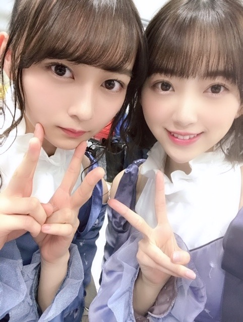

2019/0323Satクロスなネックレス

髪色、オリーブカラーにしてみました。どうかな？
すっかり春ですね
アメトーーク!3時間sp絵心ない芸人
見てくださった方ありがとうございましたm(__)m
想像以上に、絵心が無いといわれ驚きでした！
でもこれからも自分の画風とインスピレーションを大切にいろんな絵を描いていきたいと思います☺︎
久しぶりに美術館にも行きたいなぁ
すっかり春ですね
アメトーーク!3時間sp絵心ない芸人
見てくださった方ありがとうございましたm(__)m
想像以上に、絵心が無いといわれ驚きでした！
でもこれからも自分の画風とインスピレーションを大切にいろんな絵を描いていきたいと思います☺︎
久しぶりに美術館にも行きたいなぁ

みなさん優しくて本当に楽しい時間でした✨
今日3/23(土)23:00～24:30 NHK総合
「#坂道テレビ ～乃木と欅と日向～」
齊藤京子ちゃんと小林由依ちゃんと料理をしたりお話しをしました✨人見知りあまり出てないといいな。笑
3/30(土)18:30〜20:54 テレビ東京
「はじめて東京行ってみたら？」
日奈子と2人でゲストとして出させていただきました！涙あり笑いありで見応えたっぷりです！
発売中「ar」「B.L.T.5月号」
よろしくお願いします^-^


あやねちん だいすき♡
私、、、白玉みたい。笑
でははは
2019/03/23 20:48
コメント(435)
ブログ更新ありがとう！
アメトーーク見ました！
みおなちゃんの絵すごく大好きです！
坂道テレビも見ました！
僕は、人見知りしてなかったと思います！
みなおちゃん大好きです！
アメトーーク見ました！
みおなちゃんの絵すごく大好きです！
坂道テレビも見ました！
僕は、人見知りしてなかったと思います！
みなおちゃん大好きです！
髪色似合ってます❤
落ち着いた色ですね♪
坂道テレビは、録画
してるので楽しみ(^^)
落ち着いた色ですね♪
坂道テレビは、録画
してるので楽しみ(^^)
堀ちゃん、坂道テレビ見たよ〜
堀ちゃんの仕切りと、料理作ってる姿
良かったよー
そして、ダントツ可愛かったよー
堀ちゃん、大好きだよー
堀ちゃんの仕切りと、料理作ってる姿
良かったよー
そして、ダントツ可愛かったよー
堀ちゃん、大好きだよー
オリーブカラーも似合ってて可愛いよ！
こんにちは
オリーブカラーの髪色で春を感じましたよ～
アメトーーク！とっても楽しかったです！！
個性的な感性を今後も大切にして下さいね◎
坂道テレビのお鍋も美味しそうでした！！
お料理している姿にもキュンとしましたー♡
カウンター椅子の柄がお猿さんでしたね！笑
進行役をしている姿も頼もしく思いました♡
あやねちんの笑顔が見れて凄く嬉しいです！
CDTVスペシャルでも2期生が大活躍でした☆
そして、arもB.L.T.も素晴らしいですよ！
日奈子ちゃんとの番組もとても楽しみです♪
未央ちゃんは、、
白玉みたいにつるんってしてますね～☺
オリーブカラーの髪色で春を感じましたよ～
アメトーーク！とっても楽しかったです！！
個性的な感性を今後も大切にして下さいね◎
坂道テレビのお鍋も美味しそうでした！！
お料理している姿にもキュンとしましたー♡
カウンター椅子の柄がお猿さんでしたね！笑
進行役をしている姿も頼もしく思いました♡
あやねちんの笑顔が見れて凄く嬉しいです！
CDTVスペシャルでも2期生が大活躍でした☆
そして、arもB.L.T.も素晴らしいですよ！
日奈子ちゃんとの番組もとても楽しみです♪
未央ちゃんは、、
白玉みたいにつるんってしてますね～☺
アメトーークめっちゃ笑ったよ（笑）
堀ちゃんタイタニックの絵で1位もらってよかったね（笑）
堀ちゃんタイタニックの絵で1位もらってよかったね（笑）
最近たくさんテレビで未央奈が見れて嬉しいです
未央奈大好き！！
体調に気をつけて頑張ってね
未央奈大好き！！
体調に気をつけて頑張ってね
こんにちは‼︎
アメトーーク、観ましたよ♪
まず最初に思ったこと。
未央奈、ベレー帽がめっちゃ似合う…‼︎
その未央奈の佇まいがあまりに可愛くて、最初の数分は話が入ってきませんでした(笑)。
絵心の有る無しはさておき、未央奈の存在によって、アメトーークの映像を絵的に美しくしていたのは間違いないと思います‼︎
いろんな形で番組に貢献していましたね♪
やっぱり未央奈の絵は独特で、そういう意味でも番組を面白くしてくれていました。
でも、普段あまりいじられるキャラじゃないから、未央奈的にはちょっとしんどかったかもしれませんね。
そういうところで、きちんと笑顔を作れることはとっても大事。
よく頑張りましたね‼︎
絢音ちゃんとの写真は、CDTVの時のかな？
二人ともめっちゃ可愛い♪
卒業するメンバーもいて、オリジナルメンバーが揃わない曲も増えてきたから、未央奈と絢音ちゃんが共演する機会も増えていきそうですね。
今後の二人の動向に目が離せませんね‼︎
そうそう、卒業といえば…
先日、かりんちゃんが卒業を発表しましたね。
『将棋フォーカス』のMC交代のニュースを聞いた時、なんとなく、もしかすると卒業も考えているのかも、と思っていました。
2期生の中からも、少しずつ別の道を歩むメンバーも出てきて。
寂しい気持ちもありますが、彼女たちが自分の判断で決めたこと。
これからも頑張ってほしいですね‼︎
ではでは、また。
今日も未央奈にとっていい1日になりますように。
そして、かりんちゃんの未来が、明るく楽しいものでありますように…‼︎
アメトーーク、観ましたよ♪
まず最初に思ったこと。
未央奈、ベレー帽がめっちゃ似合う…‼︎
その未央奈の佇まいがあまりに可愛くて、最初の数分は話が入ってきませんでした(笑)。
絵心の有る無しはさておき、未央奈の存在によって、アメトーークの映像を絵的に美しくしていたのは間違いないと思います‼︎
いろんな形で番組に貢献していましたね♪
やっぱり未央奈の絵は独特で、そういう意味でも番組を面白くしてくれていました。
でも、普段あまりいじられるキャラじゃないから、未央奈的にはちょっとしんどかったかもしれませんね。
そういうところで、きちんと笑顔を作れることはとっても大事。
よく頑張りましたね‼︎
絢音ちゃんとの写真は、CDTVの時のかな？
二人ともめっちゃ可愛い♪
卒業するメンバーもいて、オリジナルメンバーが揃わない曲も増えてきたから、未央奈と絢音ちゃんが共演する機会も増えていきそうですね。
今後の二人の動向に目が離せませんね‼︎
そうそう、卒業といえば…
先日、かりんちゃんが卒業を発表しましたね。
『将棋フォーカス』のMC交代のニュースを聞いた時、なんとなく、もしかすると卒業も考えているのかも、と思っていました。
2期生の中からも、少しずつ別の道を歩むメンバーも出てきて。
寂しい気持ちもありますが、彼女たちが自分の判断で決めたこと。
これからも頑張ってほしいですね‼︎
ではでは、また。
今日も未央奈にとっていい1日になりますように。
そして、かりんちゃんの未来が、明るく楽しいものでありますように…‼︎
坂道テレビ、観ましたよー！
ゆいぽんときょんことの対談、唯一の料理の出来るメンバーとして、二人をリードして、トークも上手く回して、良いお姉さんっぷりが、とても良かったです♪
乃木坂メンバーの中では中々見られない、未央奈ちゃんの新たな魅力を見つけた様な気がします♪☆
ゆいぽんときょんことの対談、唯一の料理の出来るメンバーとして、二人をリードして、トークも上手く回して、良いお姉さんっぷりが、とても良かったです♪
乃木坂メンバーの中では中々見られない、未央奈ちゃんの新たな魅力を見つけた様な気がします♪☆
アメトーークも坂道テレビも最高でした！！
特に坂道テレビは定期的にやって欲しいって思うくらい
本当に良かった！！
ホットギミック楽しみ！
特に坂道テレビは定期的にやって欲しいって思うくらい
本当に良かった！！
ホットギミック楽しみ！
短い期間にたくさんブログ更新お疲れ様です、ありがとうございます。755も頻繁でとても嬉しいです。
まさかこんなに早くブログが更新されるとは思っておらずびっくりしています。嬉しいです^^*
髪型のオリーブカラー、随分とぽかぽか陽気になってきていますし春らしくて、春に合っていてすごく素敵です。
CDTV見させていただきました〜⸜( •⌄• )⸝
卒業ソング音楽祭ということでサヨナラの意味の披露、地上波では久しぶりだったのではないでしょうか、私は今年度卒業した身なので少し今までの学生生活を振り返りながら見させていただきました。
飛鳥ちゃんが曲フリをしている時に映っていた堀さんの表情が個人的にはお気に入りでした！
アメトーークの絵心ない芸人見ましたよ〜( ´ω` )/
となりが好きな芸人さんで名前をあげていたミキの亜生さんで勝手ながら共演できてよかったなぁと思いました！笑
また、もう1人のおとなりさんはロザンの宇治原でよくれなちさんがQさまで共演していますよね、こうして他のメンバーが共演した方と堀さんが繋がっていくのは素敵だなぁって思います(*^^*)
他の共演者の方は前田健太さん以外芸人さんというのもあり堀さん姿勢の良さが目立ち、ああいったところでしゃんとできて凄いと思いましたよ〜笑
肝心な「絵」！ですが、映画「タイタニック」のお題のところでは男女が手を繋いでいるのが凄く伝わってきました！
そして、No.1おめでとうございます！！！
総合1位は逃してしまいましたがまた次のチャンスがあれば狙っていきましょ^^
あごクイがお題の時の前田健太さんの絵は指がレコメンポーズみたいになってる！って思いながら見てました笑
堀さんも思いましたかね？笑
全体を通して番組自体もアメトーークさんなだけあってすごく面白かったですし楽しそうにしている堀さんも見れて大大大満足でした！
そしてそして坂道TVを見たのでその感想を！
番組全体でいうとメンバーの皆さんの気持ちだったりが知れたことがすごく良かったように感じました。
すごく大変だとは思うんですけど、今後、坂道合同ライブなんていうのが実現しそうだな〜なんて思わせてくれる素敵な番組でした！
3つの坂道メンバーが集まってお話していたところでは堀さんは小林由依さんと齊藤京子さんと料理をしたりお話していましたね
部屋が白い、堀さんの服が白い、堀さんが白くて眩しかったです笑
映画を観ることが趣味だからだと思うんですがアウトドアだけどインドアと言っていたのが個人的にはすごく面白かったです笑
また、平手友梨奈さんとよく焼肉を食べに行く仲だと言うのは驚きました！(どこかで以前言っていたらすみません)
どんなお話をするのかが全く想像できません笑
話の内容にばかり注目してしまいましたが堀さんの家庭的なシーンが見れてすごくよかったです( ´▽｀)
今度はクックパッドTVなんかで堀さんの料理姿見れたりしないですかね？
密かに思っています笑
乃木中以外でこうして週に2回も堀さんを地上波の番組、それも歌番組以外で見ることができて凄く幸せでした〜(*ˊ꒳ˋ*)
4月からのお仕事、頑張れます！
雑誌等もチェックしておきますね^^*
すごく長くなってしまって申し訳ないです。。。
これからも応援します。
いつも元気をもらっています、ありがとうございます。
あるけみすと
まさかこんなに早くブログが更新されるとは思っておらずびっくりしています。嬉しいです^^*
髪型のオリーブカラー、随分とぽかぽか陽気になってきていますし春らしくて、春に合っていてすごく素敵です。
CDTV見させていただきました〜⸜( •⌄• )⸝
卒業ソング音楽祭ということでサヨナラの意味の披露、地上波では久しぶりだったのではないでしょうか、私は今年度卒業した身なので少し今までの学生生活を振り返りながら見させていただきました。
飛鳥ちゃんが曲フリをしている時に映っていた堀さんの表情が個人的にはお気に入りでした！
アメトーークの絵心ない芸人見ましたよ〜( ´ω` )/
となりが好きな芸人さんで名前をあげていたミキの亜生さんで勝手ながら共演できてよかったなぁと思いました！笑
また、もう1人のおとなりさんはロザンの宇治原でよくれなちさんがQさまで共演していますよね、こうして他のメンバーが共演した方と堀さんが繋がっていくのは素敵だなぁって思います(*^^*)
他の共演者の方は前田健太さん以外芸人さんというのもあり堀さん姿勢の良さが目立ち、ああいったところでしゃんとできて凄いと思いましたよ〜笑
肝心な「絵」！ですが、映画「タイタニック」のお題のところでは男女が手を繋いでいるのが凄く伝わってきました！
そして、No.1おめでとうございます！！！
総合1位は逃してしまいましたがまた次のチャンスがあれば狙っていきましょ^^
あごクイがお題の時の前田健太さんの絵は指がレコメンポーズみたいになってる！って思いながら見てました笑
堀さんも思いましたかね？笑
全体を通して番組自体もアメトーークさんなだけあってすごく面白かったですし楽しそうにしている堀さんも見れて大大大満足でした！
そしてそして坂道TVを見たのでその感想を！
番組全体でいうとメンバーの皆さんの気持ちだったりが知れたことがすごく良かったように感じました。
すごく大変だとは思うんですけど、今後、坂道合同ライブなんていうのが実現しそうだな〜なんて思わせてくれる素敵な番組でした！
3つの坂道メンバーが集まってお話していたところでは堀さんは小林由依さんと齊藤京子さんと料理をしたりお話していましたね
部屋が白い、堀さんの服が白い、堀さんが白くて眩しかったです笑
映画を観ることが趣味だからだと思うんですがアウトドアだけどインドアと言っていたのが個人的にはすごく面白かったです笑
また、平手友梨奈さんとよく焼肉を食べに行く仲だと言うのは驚きました！(どこかで以前言っていたらすみません)
どんなお話をするのかが全く想像できません笑
話の内容にばかり注目してしまいましたが堀さんの家庭的なシーンが見れてすごくよかったです( ´▽｀)
今度はクックパッドTVなんかで堀さんの料理姿見れたりしないですかね？
密かに思っています笑
乃木中以外でこうして週に2回も堀さんを地上波の番組、それも歌番組以外で見ることができて凄く幸せでした〜(*ˊ꒳ˋ*)
4月からのお仕事、頑張れます！
雑誌等もチェックしておきますね^^*
すごく長くなってしまって申し訳ないです。。。
これからも応援します。
いつも元気をもらっています、ありがとうございます。
あるけみすと
みおなの絵自信もっていいと思うよ！w
ホットギミック楽しみすぎる！！
ホットギミック楽しみすぎる！！
堀ちゃん！更新ありがとう！
すみません。遅めのコメントです。
髪の毛、染めたんだ～‼
すっかり、春色の髪仕様で、
さすがですね～！
似合ってて、可愛いよ‼
アメトークも見たで～！
さすがの絵心ですね～笑‼
自分もあまり上手じゃないので
堀ちゃんの気持ちがよ～く
わかりますよ！
これから、うまく絵が描けるように
頑張ってね～！
インスピレーション、大事よ‼
来年の、出場も楽しみにしてるよ～‼
坂道テレビも録画しているので
楽しみにして、見ますね～！
絢音ちゃんとのコンビも
最高よ～！ どっちも白玉みたい…
次回のお写真も、楽しみにしてるよ！
次回の更新も楽しみにしてるよ‼
体調も気をつけて、過ごしてね～！
それでは！
すみません。遅めのコメントです。
髪の毛、染めたんだ～‼
すっかり、春色の髪仕様で、
さすがですね～！
似合ってて、可愛いよ‼
アメトークも見たで～！
さすがの絵心ですね～笑‼
自分もあまり上手じゃないので
堀ちゃんの気持ちがよ～く
わかりますよ！
これから、うまく絵が描けるように
頑張ってね～！
インスピレーション、大事よ‼
来年の、出場も楽しみにしてるよ～‼
坂道テレビも録画しているので
楽しみにして、見ますね～！
絢音ちゃんとのコンビも
最高よ～！ どっちも白玉みたい…
次回のお写真も、楽しみにしてるよ！
次回の更新も楽しみにしてるよ‼
体調も気をつけて、過ごしてね～！
それでは！
お姉さん,化粧とてもきれいです。
服もよく着て格好いいですね。
握手会に行って話したい学生ファンです。 そして,韓国の化粧品使ってくれてありがとうございます。 うれしいです！！！
服もよく着て格好いいですね。
握手会に行って話したい学生ファンです。 そして,韓国の化粧品使ってくれてありがとうございます。 うれしいです！！！
ブログの更新ありがとう
髪色をオリーブカラーに変えたんだね。
未央奈にスッゴく似合ってると思うよ
アメトーークを観たよ。
あの豪華メンバーの中に未央奈は入って、緊張しなかった？
同じテーマの絵でも描く人によってまったく違う絵にから面白いよね。
出演者それぞれが個性のある絵で面白かったよ。
絵心ない芸人は定期的にやっているみたいだから、未央奈の絵がまた見たいし次回も未央奈が呼ばれて欲しいよ。
坂道テレビももちろん見たよ。
欅坂・日向坂の2人を上手くリードしながらの料理・トークは流石だな～と思いながら見てたよ。
未央奈が料理ができることを知らなかった人もいるみたいだけど、未央奈が野菜を切っているシーンが映っていて、包丁を使いなれていることが分かっただろうから、未央奈が料理ができることを知ってもらえたと思うよ。
未央奈の過去のブログに得意料理が「ドライカレ、ー、ひき肉のあんかけ団子、カボチャの煮物、豚肉の梅しそ巻き」と書いてあって、全部美味しそうだけど、俺はカレーが大好きだから未央奈が作ったドライカレーが食べてみたい。
スペイベで未央奈の料理が食べられるイベントをやって欲しいよ
ゴロ～
髪色をオリーブカラーに変えたんだね。
未央奈にスッゴく似合ってると思うよ
アメトーークを観たよ。
あの豪華メンバーの中に未央奈は入って、緊張しなかった？
同じテーマの絵でも描く人によってまったく違う絵にから面白いよね。
出演者それぞれが個性のある絵で面白かったよ。
絵心ない芸人は定期的にやっているみたいだから、未央奈の絵がまた見たいし次回も未央奈が呼ばれて欲しいよ。
坂道テレビももちろん見たよ。
欅坂・日向坂の2人を上手くリードしながらの料理・トークは流石だな～と思いながら見てたよ。
未央奈が料理ができることを知らなかった人もいるみたいだけど、未央奈が野菜を切っているシーンが映っていて、包丁を使いなれていることが分かっただろうから、未央奈が料理ができることを知ってもらえたと思うよ。
未央奈の過去のブログに得意料理が「ドライカレ、ー、ひき肉のあんかけ団子、カボチャの煮物、豚肉の梅しそ巻き」と書いてあって、全部美味しそうだけど、俺はカレーが大好きだから未央奈が作ったドライカレーが食べてみたい。
スペイベで未央奈の料理が食べられるイベントをやって欲しいよ
ゴロ～
未央奈ー！あーやんです。
髪めちゃ似合ってる！♡
髪めちゃ似合ってる！♡
可愛すぎる
みーおな！すき
未央奈ちゃんこんばんは‼ありがとうございます‼楽しみにしてます‼頑張ります‼頑張って下さい。ありがとうございます！
未央奈ちゃんこんばんは‼ありがとうございます‼楽しみにしてます‼頑張ります‼頑張って下さい。ありがとうございます！
未央奈ちゃんこんばんは‼ありがとうございます‼楽しみにしてます‼頑張ります‼頑張って下さい。ありがとうございます！
かわいー！
みおなちゃん更新ありがとう╰(*´︶`*)╯♡
オリーブカラーも似合ってて良きです
アメトーーク！観たよー(*´꒳`*)
みおなちゃんの絵心にまた惚れ直しました笑
好きなバラエティにみおなちゃんが出てるのが嬉しかったです（╹◡╹）♡
坂道テレビ観たよー٩(๑❛ᴗ❛๑)۶
京子ちゃんと由依ちゃんとのお料理など見ごたえありました(*´-`)
人見知り少しだけ出てたかも笑
でも2人に話を振ったりとても良きでした･:*+.\(( °ω° ))/.:+
毎週放送して欲しいくらいでした(● ˃̶͈̀ロ˂̶͈́)੭ꠥ⁾⁾
お知らせありがと〜
そちらもチェックしますねー♪(๑ᴖ◡ᴖ๑)♪
絢音ちゃんとのお写真もありがとう
オリーブカラーも似合ってて良きです
アメトーーク！観たよー(*´꒳`*)
みおなちゃんの絵心にまた惚れ直しました笑
好きなバラエティにみおなちゃんが出てるのが嬉しかったです（╹◡╹）♡
坂道テレビ観たよー٩(๑❛ᴗ❛๑)۶
京子ちゃんと由依ちゃんとのお料理など見ごたえありました(*´-`)
人見知り少しだけ出てたかも笑
でも2人に話を振ったりとても良きでした･:*+.\(( °ω° ))/.:+
毎週放送して欲しいくらいでした(● ˃̶͈̀ロ˂̶͈́)੭ꠥ⁾⁾
お知らせありがと〜
そちらもチェックしますねー♪(๑ᴖ◡ᴖ๑)♪
絢音ちゃんとのお写真もありがとう
テレビのみおなちゃん可愛かったです！
ブログ更新ありがとうございます。
堀ちゃん可愛い過ぎます。
これからもずっと応援してます。
後映画観に行きます。
堀ちゃん可愛い過ぎます。
これからもずっと応援してます。
後映画観に行きます。
すき
遅れてコメです
アメトーークと坂道テレビ見ました！！！
みおなちゃん相変わらず可愛かったです笑
アメトーークでは安定の画伯で面白かったです笑笑
坂道テレビでは意外と料理しはることにびっくりしました
アメトーークと坂道テレビ見ました！！！
みおなちゃん相変わらず可愛かったです笑
アメトーークでは安定の画伯で面白かったです笑笑
坂道テレビでは意外と料理しはることにびっくりしました
アメトーーク凄かったね～。しっかりと印象残せた思うよ！
堀ちゃん、大好きだよー
良かったですよ(^ω^)頑張ってました。
散々絵心ないと言われてましたが驚かれたんですか？
なるほど(ーωー)う～ん何と言えばよいのか、何が正解かは定かではありませんが、非常に突出した独創性が突拍子もなく極まりない絵心をお持ちですね(・(ェ)・)
散々絵心ないと言われてましたが驚かれたんですか？
なるほど(ーωー)う～ん何と言えばよいのか、何が正解かは定かではありませんが、非常に突出した独創性が突拍子もなく極まりない絵心をお持ちですね(・(ェ)・)
アメトーーク!、坂道テレビ
まだちゃんと見れてないから
時間がある時見ます。
つか、今回のブログの写真どれも最高です！
1枚目、2枚目とか神々しいです。
まだちゃんと見れてないから
時間がある時見ます。
つか、今回のブログの写真どれも最高です！
1枚目、2枚目とか神々しいです。
堀ちゃん可愛い！
坂道テレビ、今後も定期的に放送してもらえるのかな?
欅坂のスガイちゃんとの絡みを次回期待してます。
欅坂のスガイちゃんとの絡みを次回期待してます。
早いもので後、5日でプロ野球開幕！
今年の中日ドラゴンズは未央奈ちゃんから見てどう思う？
監督が変わったからまた違うかもね。根尾楽しみだね、スタメンに出れば盛り上がるよ
未央奈ちゃんは中日応援する？
今年の中日ドラゴンズは未央奈ちゃんから見てどう思う？
監督が変わったからまた違うかもね。根尾楽しみだね、スタメンに出れば盛り上がるよ
未央奈ちゃんは中日応援する？
坂道テレビ後半も楽しかったです✨
自分からしたらアイドル堀未央奈さんは既に多くの人に影響を与えているし唯一無二の存在ですが、それでももっと色んなことに挑戦されて、色んな姿を見られるのなら嬉しいですし応援したいです✨
まずはホットギミックですね ！
楽しみにしてます〜〜〜
自分からしたらアイドル堀未央奈さんは既に多くの人に影響を与えているし唯一無二の存在ですが、それでももっと色んなことに挑戦されて、色んな姿を見られるのなら嬉しいですし応援したいです✨
まずはホットギミックですね ！
楽しみにしてます〜〜〜
どうもかずです。
アメトーク観ました。
なかなかの言われようでしたね（笑）
絵を否定されてもめげない未央奈ちゃんにケンコバさんの「ほんと君どんな教育受けてきたんや！？」面白かったです（笑）
ダンクで横を向いていたから絵は上手になった…かな？
でははは
アメトーク観ました。
なかなかの言われようでしたね（笑）
絵を否定されてもめげない未央奈ちゃんにケンコバさんの「ほんと君どんな教育受けてきたんや！？」面白かったです（笑）
ダンクで横を向いていたから絵は上手になった…かな？
でははは
みおたん、お疲れ様です。
オリーブ色良いね！
明るくなって春らしいね！
似合ってるよ！
行列のできる法律相談所のズーミンからの、
おしゃれの今田美桜ちゃん！
楽しかったよ。
今田美桜ちゃんのとんこつラーメンの食べ方が同じでビックリでした！（紅生姜とゴマを大量に入れて食べる）
二人とも可愛いけど、やっぱりみおたんが一番可い
二つの番組にでてほしいな！
アメトークで爪痕残したしね！
ゆいぽんときょんことのトークのみおたん、
超絶可愛かった
そして、お姉さんみたいだったね！
二人とも料理全く作らないんだね！
まあ、俺もそうだけど！
それでは健康第一で！
信州のミッキイでした！
オリーブ色良いね！
明るくなって春らしいね！
似合ってるよ！
行列のできる法律相談所のズーミンからの、
おしゃれの今田美桜ちゃん！
楽しかったよ。
今田美桜ちゃんのとんこつラーメンの食べ方が同じでビックリでした！（紅生姜とゴマを大量に入れて食べる）
二人とも可愛いけど、やっぱりみおたんが一番可い
二つの番組にでてほしいな！
アメトークで爪痕残したしね！
ゆいぽんときょんことのトークのみおたん、
超絶可愛かった
そして、お姉さんみたいだったね！
二人とも料理全く作らないんだね！
まあ、俺もそうだけど！
それでは健康第一で！
信州のミッキイでした！
髪色とってもかわいいよ！
アメトーーク見たよ！さすが画伯って感じだったよww
これからもいっぱい芸術作ってねww
アメトーーク見たよ！さすが画伯って感じだったよww
これからもいっぱい芸術作ってねww
凄い活躍ぶりで僕もとても嬉しいです。未央奈推しであることを誇りに思います。ではははは‥。
アメトークとても良かったです！
ブログの写真毎回可愛くて楽しみです！
ブログの写真毎回可愛くて楽しみです！
未央奈ちゃん、ひろっしーです！コメント投稿574回目です！
前回はブログ「#ホットギミック」にブログ「いつものぎょうざ」とブログ「#ホットギミック」と「アメトーーク！」と「CDTV」の感想を書きました！
時間→「No.262 2019年3月22日 12:15」
ブログ更新ありがとうございます！
髪色変えたんですね！おぉ～春っぽくて素敵！へぇ～、この色オリーブって言うんだ(恥)
「アメトーーク！」面白かったな～！
堀画伯には申し訳ありませんが、大爆笑の連発でした！他のメンバーも出演して欲しいです！まだまだ乃木坂には画伯が沢山いますしね(笑)
「坂道テレビ」観ました！
僕が観た限り、人見知り全然大丈夫でしたよ！結構色んな話をされていましたね！レアかも！料理の時も積極的に話をされて感心しました！坂道グループの活躍を心から願っています！
あと、未央奈ちゃんはもう「誰かに影響を与えられる人」になれてます！本当に尊敬します！
この日、いつにも増して肌白いですね！
とにかく凄く綺麗でした！可愛かったな～！
「坂道テレビ」レギュラー化して欲しいです！
すずほりのツーショット、2人のキラキラした瞳に吸い込まれそうでした！はぁ、可愛い～！
ここまで読んで頂きありがとうございました！
毎日お仕事お疲れ様です！体調にはくれぐれも気を付けて頑張ってくださいね！
おやすみおな～！
前回はブログ「#ホットギミック」にブログ「いつものぎょうざ」とブログ「#ホットギミック」と「アメトーーク！」と「CDTV」の感想を書きました！
時間→「No.262 2019年3月22日 12:15」
ブログ更新ありがとうございます！
髪色変えたんですね！おぉ～春っぽくて素敵！へぇ～、この色オリーブって言うんだ(恥)
「アメトーーク！」面白かったな～！
堀画伯には申し訳ありませんが、大爆笑の連発でした！他のメンバーも出演して欲しいです！まだまだ乃木坂には画伯が沢山いますしね(笑)
「坂道テレビ」観ました！
僕が観た限り、人見知り全然大丈夫でしたよ！結構色んな話をされていましたね！レアかも！料理の時も積極的に話をされて感心しました！坂道グループの活躍を心から願っています！
あと、未央奈ちゃんはもう「誰かに影響を与えられる人」になれてます！本当に尊敬します！
この日、いつにも増して肌白いですね！
とにかく凄く綺麗でした！可愛かったな～！
「坂道テレビ」レギュラー化して欲しいです！
すずほりのツーショット、2人のキラキラした瞳に吸い込まれそうでした！はぁ、可愛い～！
ここまで読んで頂きありがとうございました！
毎日お仕事お疲れ様です！体調にはくれぐれも気を付けて頑張ってくださいね！
おやすみおな～！
堀さん､こんばんは｡
BLT見ました。
２枚目の闇の中で輝きを発する堀さんは､美しさに間違いがないです｡３枚目は色気を感じて何だか切なくなりました｡屋内の撮影だったのは､直後の鈴木さんと対の関係にするためだったのでしょうか｡だとしたら日の出とか目覚めのイメージは堀さんの明るさにとても合ってる気がしました｡
インタビューも読みました｡見えないところで後輩を助けてる話が聞けて良かったです｡細かい目標って言い方をしてましたけど､グループでの役割を模索し続けるところが堀さんらしさな気もしました｡自己イメージも絶対じゃないから､堀さんが先輩方に感じたようなそれぞれの特別な役割を､周りの人も堀さんに感じてるってこともあるかもしれませんね｡何期だろうとグループに貢献できるように､皆が少しづつ､でしゃばれるグループに出来たら良いですね｡
堀さんの､甘えずに自身を追い込んでしまうところを僕はどうしても心配してしまいますけど､自信を持ってまたセンターに立ちたいという言葉が締めの言葉だったことが嬉しかったです｡
BLT見ました。
２枚目の闇の中で輝きを発する堀さんは､美しさに間違いがないです｡３枚目は色気を感じて何だか切なくなりました｡屋内の撮影だったのは､直後の鈴木さんと対の関係にするためだったのでしょうか｡だとしたら日の出とか目覚めのイメージは堀さんの明るさにとても合ってる気がしました｡
インタビューも読みました｡見えないところで後輩を助けてる話が聞けて良かったです｡細かい目標って言い方をしてましたけど､グループでの役割を模索し続けるところが堀さんらしさな気もしました｡自己イメージも絶対じゃないから､堀さんが先輩方に感じたようなそれぞれの特別な役割を､周りの人も堀さんに感じてるってこともあるかもしれませんね｡何期だろうとグループに貢献できるように､皆が少しづつ､でしゃばれるグループに出来たら良いですね｡
堀さんの､甘えずに自身を追い込んでしまうところを僕はどうしても心配してしまいますけど､自信を持ってまたセンターに立ちたいという言葉が締めの言葉だったことが嬉しかったです｡
ピーマンしか出さないと思ってたけど、ちゃんと料理できるんだね…
もっと好きになっちゃうよ…
もっと好きになっちゃうよ…
ジェラートピケです⊂(ο･㉨･ο）⊃”くまﾃﾞｽ…
ぼぶったん堀殿♡めちゃかわでうれぴーぽーo(￣◎￣)o ﾊﾞﾌﾞｩ♡
ぼぶったん堀殿♡めちゃかわでうれぴーぽーo(￣◎￣)o ﾊﾞﾌﾞｩ♡
みおな
写真集重版おめでとう
今日おも仕事頑張って。
今日おも仕事頑張って。
かわいい！応援してます
未央奈さん！おはようございます (^o^)/ お元気ですか？ 今朝の体調はいかがですか？ 今朝のお目覚めは良かった？ 未央奈さん！今日も良い１日を過ごして下さいネ❤️❤️❤️❤️❤️❤️❤️❤️❤️❤️ オリーブカラーの髪色☆彡が、本当に綺麗〜❤️❤️❤️❤️❤️❤️❤️❤️❤️❤️❤️❤️❤️❤️❤️❤️ じゃあ、未央奈さん！元気でね 風邪引かないでね❤️❤️❤️ ( ´ ▽ ` )ﾉ
ニューアルバムも楽しみですが、ニューシングルも
楽しみです。
今後も3期4期のよき手本、目標になってください。
楽しみです。
今後も3期4期のよき手本、目標になってください。


アメトーークの絵心ない芸人観たよ！
他の芸人さん達もなかなかだったけど、それに
負けず劣らず堀ちゃんの絵もなかなか画伯だったわ！
面白かったよ！